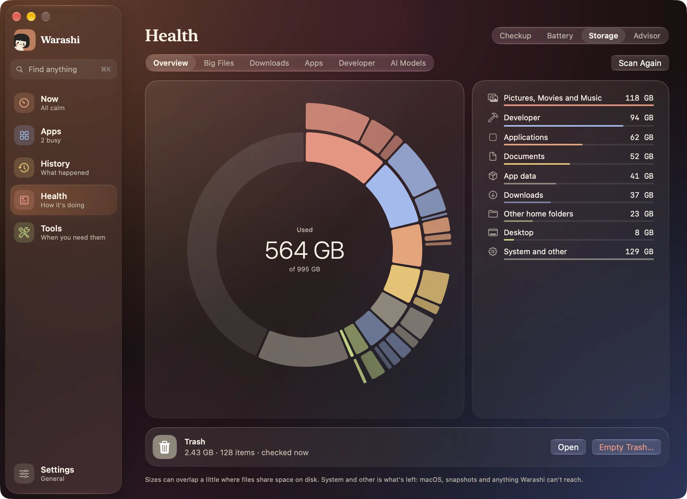

Opslag is een tabblad in Gezondheid. Het laat zien wat je opstartschijf gebruikt. Het opent met je laatste resultaten en ververst ze als ze meer dan zes uur oud zijn. Alles wat je verwijdert gaat naar de Prullenmand, nadat je ja hebt gezegd, zodat je het kunt terugzetten tot je de Prullenmand leegt.
- Open Opslag
Kies Gezondheid en dan Opslag, druk op de tegel Schijf op Nu of in het menubalkvenster, of op Open bij de opslagkaart van Controle.


- Zet Volledige schijftoegang aan
Heb je dit niet in de welkomstrondleiding gedaan, dan biedt een kaart het aan. Druk op Open Systeeminstellingen en zet Warashi één keer aan in de lijst. Daarmee kan Opslag Bureaublad, Documenten, Downloads, foto's en appgegevens meenemen. Warashi leest alleen groottes, nooit je bestanden, en er verlaat niets je Mac. Je kunt dit overslaan: Opslag meet de rest en macOS onderbreekt je nooit.
- Verken de ring
De binnenste ring zijn je categorieën, plus Systeem en Vrij. De buitenste ring zijn de grootste mappen in elk. Wijs een onderdeel aan om de naam en grootte te zien; de rest wordt gedimd en de bijbehorende rij licht op in de lijst.
- Zie wat erin zit
Kies een categorie om de grootste items te zien. Het pijltje naast een map stapt erin en meet alles wat erin zit, en je kunt zo niveau voor niveau dieper gaan. Het vergrootglas toont een item in Finder. Je eigen bestanden hebben ook een prullenmandknop.
- Scan wanneer je wilt
Klik op elk moment op Opnieuw scannen. Je kunt de pagina verlaten terwijl er gescand wordt. Opslag scant zelf opnieuw als je de pagina opent en de laatste scan meer dan een dag oud is, maar nooit op de batterij of in de Energiebesparingsmodus: een scan leest veel van de schijf, dus hij wacht op de lader, tenzij je erom vraagt.
- Leeg de Prullenmand
Onder de ring toont de kaart Prullenmand hoeveel erin zit en hoeveel onderdelen, inclusief de Prullenmand op aangesloten schijven. Hij controleert als je de pagina opent en elke twee minuten zolang die open blijft. Prullenmand legen… vraagt eerst, zegt hoeveel er verdwijnt en verwijdert het dan voorgoed, met een teller onderweg. Alles wat in gebruik is blijft staan, en de kaart zegt dat. Wat alleen een beheerder kan verwijderen, zoals een app die een installatieprogramma in Programma's zette, geeft Warashi aan Finder, die om je wachtwoord vraagt. De eerste keer vraagt macOS of Warashi Finder mag bedienen: sta het toe, of de kaart zegt wat bleef staan, met Open Automatisering.
De andere tabbladen
- Opruimen: alles wat weg zou kunnen, in drie groepen. Veilig op te ruimen: app- en browsercaches, logs, de bouwgegevens en pakketdownloads van Xcode, die allemaal vanzelf terugkomen; Zet alles in de Prullenmand… zet ze samen weg na één vraag. Eerst kijken: installatieprogramma's in Downloads die ouder zijn dan een week, tweede kopieën van een download (zoals
Rapport (1).pdf) en de kopieën die Mail bewaart van bijlagen die je hebt geopend. Voorzichtig mee omgaan: back-ups van iPhone en iPad, die misschien de enige kopie zijn. Caches van apps die openstaan en die van macOS zelf blijven met rust gelaten. Downloads, Mail, Safari en back-ups hebben Volledige schijftoegang nodig. De kaart Prullenmand staat eronder en vertelt na het legen hoeveel ruimte er is teruggekomen. De kaart Opruimen onder de ring op Overzicht laat zien hoeveel er veilig kan worden opgeruimd. - Grote bestanden: bestanden van meer dan 100 MB, gesorteerd op grootte of op leeftijd, de grootste of oudste eerst.
- Downloads: alles in je map Downloads, het oudste eerst, met installatieprogramma's gemarkeerd: daar ben je meestal klaar mee zodra de app is geïnstalleerd. Heeft Volledige schijftoegang nodig.
- Apps: elke app die je hebt geïnstalleerd, eerst die je al drie maanden niet hebt geopend. Verwijder… toont de app en wat die in je Bibliotheek heeft achtergelaten (appgegevens, caches, instellingen, bewaarde vensters, logs en, met Volledige schijftoegang, sandboxgegevens), elk met de grootte en een vinkje, en zet de aangevinkte items in de Prullenmand. Stop eerst de app. Als macOS het weigert, geef Warashi dan toestemming onder Appbeheer in Systeeminstellingen. Apps van Apple zelf staan niet in de lijst. Onderaan toont Achtergelaten door apps die je hebt verwijderd wat apps die je al hebt verwijderd in je Bibliotheek hebben achtergelaten, op basis van hun identificatie, minstens een maand ongemoeid gelaten. Alles van een ontwikkelaar van wie nog een app is geïnstalleerd, gedeelde gegevens en die van Apple zelf worden nooit getoond.
- Ontwikkelaar: wat ontwikkelaarstools steeds weer vullen: de
node_modulesvan elk project, de bouwproducten, apparaatondersteuning en caches van Xcode, en de downloadcaches van Homebrew, npm, Yarn, pnpm, Bun, pip, CocoaPods, Swift Package Manager, Gradle, Cargo en Go. Elke rij zegt of het vanzelf terugkomt en gaat na je bevestiging naar de Prullenmand. Ook Xcode-archieven staan erbij, gemarkeerd als niet terugkomend. Simulators van meer dan 500 MB staan per apparaat en iOS-versie in de lijst, met wanneer je ze het laatst gebruikte; Verwijder… verwijdert er een met het eigen hulpmiddel van Xcode, met zijn apps en gegevens. Als je Docker gebruikt, laat Opruimen… Docker images verwijderen die geen container gebruikt, de buildcache en gestopte containers; draaiende containers en volumes blijven staan. Projecten in Documenten, Downloads en Bureaublad worden alleen bekeken met Volledige schijftoegang. - AI-modellen: modellen van Ollama, LM Studio en Hugging Face, met hun grootte. Modellen van LM Studio en Hugging Face kunnen naar de Prullenmand. Ollama deelt bestanden tussen modellen, dus Kopieer opdracht geeft je de eigen
ollama rmom in Terminal uit te voeren.
Wat de categorieën betekenen
- Ontwikkelaar: Xcode-gegevens en simulators.
- App-gegevens: alles in je map Bibliotheek, behalve Ontwikkelaar.
- Prullenmand: wat erop wacht om te worden geleegd.
- Andere thuismappen: al het andere direct in je thuismap, zoals een map Code.
- Systeem en overig: de rest: macOS zelf, snapshots en plekken die Warashi niet kan lezen. De notitie onder de ring zegt hoeveel daarvan verwijderbaar is.
Als er iets niet klopt
- Sommige plekken hebben Volledige schijftoegang nodig: druk op die regel in de lijst en dan op Open Systeeminstellingen. Als Warashi niet in de lijst staat, sleep dan het symbool erin. Als het nog steeds niet wordt meegeteld, druk dan op Heropen Warashi.
Meer in Problemen oplossen, of mail adam@warashi.app.